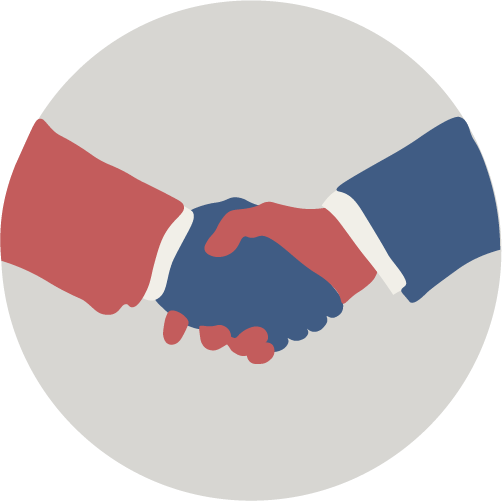

Baseret på Fyn
Vi søger medlemmer fra Fyn der kan udvide foreningens netværk og bidrage med ressourcer.
Samarbejde
Ved at skabe et bredt netværke kan vi forstærke samarbejdet mellem Retshjælpen Fyns klienter og rådgiverne.
Pletskud
Ved at kunne tilbyde de rigtige ressourcer, kan vi ramme plet, lige dér hvor klienten har behov for støtte og rådgivning.